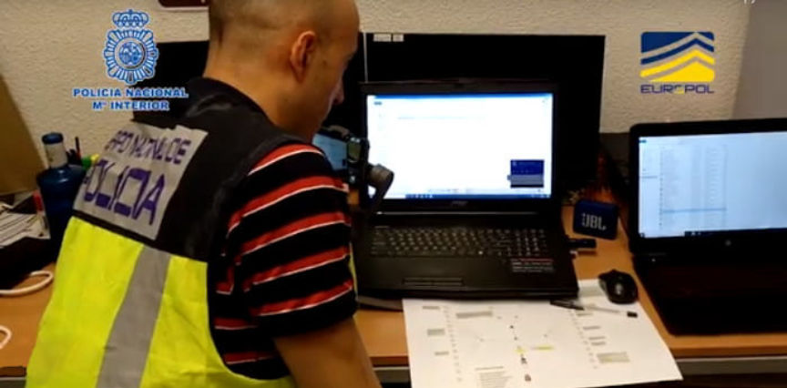
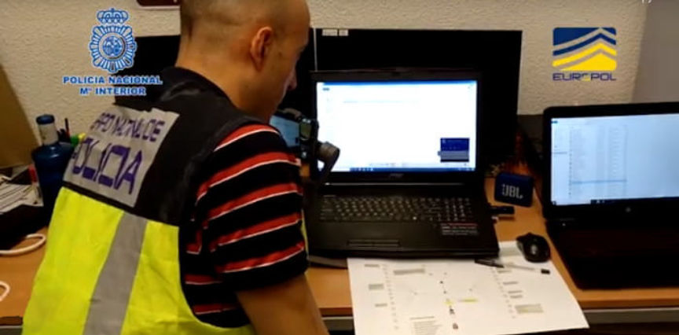

Europol: Pedophile Arrested in International Investigation
~2 min read | Published on 2020-04-23, tagged Arrested, Child-Abuse using 393 words.
A pedophile accused of producing child abuse videos and sharing them on the darkweb was arrested in Spain following an international investigation coordinated by Europol. The investigation also involved Australia’s Task Force Argos and the Spanish National Police.
According to an announcement by Europol, the investigation depended on the analysis of a 2015 child abuse video. Australia’s Task Force Argos passed information to Europol that resulted in the identification of the suspect.

Using the information from Australian authorities, Europol established that someone in Spain had produced the content in question. Europol forwarded this information to law enforcement in Spain. In Spain, authorities analyzed comments posted online by the creator of the video. The analysis indicated that the creator of the video had been living in Spain when they had created the video.
Spanish National Police:
With the help of EUROPOL, which conducts extensive studies and maintains a database of these criminal behaviors, the agents tracked down the Dark Web and found that the same user had registered with many more pedophile forums. They were even able to know some of the messages that he had posted and of which there was no record. The researchers’ inquiries revealed an email address that could be partially traced in hidden forums. The analysis of these data allowed us to arrive at a date of birth and a city of residence, Barcelona. Although it was possible that it was false information, it reconfirmed the suspicions that the author could be in our country.
During the investigation, Europol learned that the suspect had accounts on a number of child abuse forums on the darkweb. While investigating the suspect’s activities online, investigators discovered the suspect had been in contact with a someone local. The user had the same (or a similar enough) last name as the name included in the title of the video created and uploaded by the suspect.
The Spanish National Police Central High-Tech Crime Unit located the suspect in Barcelona. The COVID-19 lockdown in Spain forced the Central High-Tech Crime Unit experts based in Madrid to remotely coordinate the execution of the arrest warrant.
The arrest led to the seizure of evidence that reportedly showed that the suspect was using the darkweb to acquire child abuse images and videos. An investigation into other users of the forums frequented by the suspect is ongoing.
According to an announcement by Europol, the investigation depended on the analysis of a 2015 child abuse video. Australia’s Task Force Argos passed information to Europol that resulted in the identification of the suspect.

Cybercrime experts from the Spanish National Police Central High-Tech Crime Unit
Using the information from Australian authorities, Europol established that someone in Spain had produced the content in question. Europol forwarded this information to law enforcement in Spain. In Spain, authorities analyzed comments posted online by the creator of the video. The analysis indicated that the creator of the video had been living in Spain when they had created the video.
Spanish National Police:
With the help of EUROPOL, which conducts extensive studies and maintains a database of these criminal behaviors, the agents tracked down the Dark Web and found that the same user had registered with many more pedophile forums. They were even able to know some of the messages that he had posted and of which there was no record. The researchers’ inquiries revealed an email address that could be partially traced in hidden forums. The analysis of these data allowed us to arrive at a date of birth and a city of residence, Barcelona. Although it was possible that it was false information, it reconfirmed the suspicions that the author could be in our country.
During the investigation, Europol learned that the suspect had accounts on a number of child abuse forums on the darkweb. While investigating the suspect’s activities online, investigators discovered the suspect had been in contact with a someone local. The user had the same (or a similar enough) last name as the name included in the title of the video created and uploaded by the suspect.
The Spanish National Police Central High-Tech Crime Unit located the suspect in Barcelona. The COVID-19 lockdown in Spain forced the Central High-Tech Crime Unit experts based in Madrid to remotely coordinate the execution of the arrest warrant.
The arrest led to the seizure of evidence that reportedly showed that the suspect was using the darkweb to acquire child abuse images and videos. An investigation into other users of the forums frequented by the suspect is ongoing.